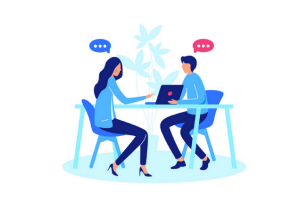
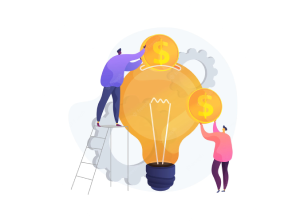
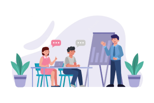
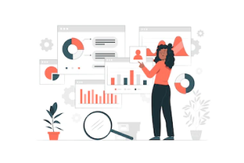
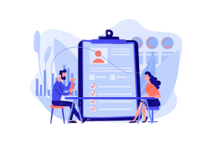

Cómo
funciona el programa.
Buscamos equipos que tengan grandes ideas sobre cómo usar la contratación abierta para combatir la corrupción y fortalecer las instituciones democráticas, proteger el medioambiente, mejorar la resiliencia climática o promover la inclusión social.
Mediante un proceso competitivo se seleccionarán hasta nueve equipos de todo el mundo. Se brindará apoyo personalizado en inglés, español, francés, ruso o indonesio.
Durante los 18 meses del programa, los equipos obtendrán:
-

-
 Reuniones virtuales quincenales con asesores de Lift -
 Hasta USD 35.000 en ayuda financiera -
 Asistencia técnica sobre temas de contratación abierta según las necesidades específicas de su equipo. -
 Asistencia técnica y con datos para reunir y analizar sus datos de contratación -
 Apoyo para el monitoreo, el aprendizaje y la evaluación (MEL) para facilitar el aprendizaje durante la implementación
Los equipos también podrían recibir durante otros 6 meses asistencia para MEL y con la documentación, así como apoyo técnico informal una vez completado el programa, según las necesidades y los avances del equipo.
Cronograma previsto.
Postulación
Selección
Orientación inicial y planificación
Implementación
*Las fechas pueden variar según las necesidades y avances del equipo.
Su compromiso.
Los equipos deben estar dispuestos a asumir estos compromisos:
Antes de postularse
- Los dos responsables conjuntos del proyecto se comprometen a participar activamente en el programa durante los 18 meses de duración.
- Su proyecto cumple con los requisitos de elegibilidad ya que cuenta con un objetivo claro que se alinea con uno de los tres temas desafío, apoyo del liderazgo político para implementar cambios, datos para medir sus avances y capacidad del equipo para hacer el trabajo y participar en actividades del programa.
En el proceso de postulación
- Completar una postulación de 12 preguntas contándonos sobre su proyecto de reforma, equipo y contexto. Preparar esta postulación no debería llevarle más de 3 horas.
- Si es seleccionado para avanzar, deberá preparar y presentar una propuesta y participar en una ronda de entrevistas.
Queremos ayudarle a preparar la mejor postulación posible. Consulte sobre más orientación en nuestros recursos para la postulación.
Durante el programa
- Trabajar de manera proactiva para alcanzar los hitos del proyecto en su plan. Esto requiere contar con un buen equipo, con liderazgo y capacidad para realizar avances periódicos en el proyecto de reforma que usted creará y perfeccionará durante los talleres Liftoff. Confiamos en que su equipo pueda avanzar en el proyecto sin OCP gracias a los responsables del proyecto y a la capacidad del equipo, pero estaremos disponibles para brindarle apoyo.
- Realizar llamadas periódicas para reportarse con asesores de programas de OCP cada 2 semanas, en las que participe al menos 1 miembro del equipo de cada departamento u organización participante.
- Participar en dos talleres Lift-off con su equipo y socios fundamentales/actores interesados externos principales. Estos talleres duran entre 2 y 4 días y son una oportunidad de planificación intensiva de proyectos y trabajo en conjunto para lograr avanzar en los hitos fundamentales. Los talleres se ofrecerán forma en presencial en su región. Confiamos en que nos ayude a elegir a los participantes adecuados para que estos talleres sean un éxito.
- Desarrollar y utilizar un plan de Monitoreo, Aprendizaje y Participación (MEL) para realizar adaptaciones y dar seguimiento al progreso de su reforma.
- Reunir datos relevantes a los objetivos de su proyecto para establecer parámetros iniciales y comprender sus avances. Sabemos que reunir datos sobre contratación puede ser difícil, pero contará con nuestra ayuda para mapear esta información y analizarla.
Cuanto más avance, mayor apoyo podrá brindarle OCP como asistencia técnica y financiamiento.